5 Basics of Version Control
5.1 Objectives
To introduce the basics of working with version control systems in R, using git and GitHub
5.2 Preliminaries
- Install this package in R: {usethis}
5.3 Version Control Systems
For any of us who work with data files and associated analyses and documents over a long period of time, it can become very complicated to keep track of the “latest version” of what we’re working on. This is especially true if we are collaborating with others on a project and need to share these things back and forth. This is a problem that software developers have been dealing with for a long time, however, and there is a robust ecosystem of “version control systems” (VCSs) out there for dealing with this problem. The basic idea behind these systems is that all of the work on a particular project is stored in a repository (or repo), and as you work on and modify files and data for the project, you “commit” your changes periodically. The VCS keeps track of what changes between commits and allows you to roll back to previous versions if need be.
You can also branch a repository - basically, make a duplicate copy of it - and work on the new branch and then, later, merge your changes back into the main branch. Multiple people can each work on different branches simultaneously, and the software will take care of looking for and highlighting changes that occur on different branches so that they can be merged back in appropriately. This module will introduce you to one such system.
NOTE: The source for some of the information covered below, along with a host of other valuable information about using R and git, is provided on the web book Happy Git and GitHub for the useR by Jenny Bryan (RStudio).
5.4 First Steps with git and GitHub
Installing git
One of the most popular and frequently used VCSs is git.
- Download and install git for your operating system. This will put the appropriate software on your machine.
NOTE: To install on MacOS, binary installers may not be available for the newest version of git. Thus, you may need to first install the packahe manager software Homebrew and then run
brew install gitat the command line. Visit https://brew.sh/ for instructions on installing Homebrew.
Note that git is simply a bit of software running on your own computer that watches the contents of particular user-specified folders.
Let us now check if you have installed correctly…
- In RStudio, go to the Tools menu and select Terminal > New Terminal. In the terminal window, type,
which git. On MacOS you should see something like:/usr/bin/gitor/usr/local/bin/git, which is the path to your git executable file. On Windows, you should see something like:/cmd/git - In the same terminal, type
git --versionto see which version of git you are running. You should see something likegit version 2.35.0.
Running the git --version command or the command git config on MacOS may also prompt you to install a set of developer command line tools… this is okay (and good!) to accept. Doing so will install the Xcode Command Line Tools. You can also install these using the command xcode-select --install.
NOTE: See also Chapter 6 of the web book, Happy Git and GitHub for the useR
Registering a GitHub Account
The git software we just installed is strictly a command-line tool and is a bit difficult to pick up from scratch. However, the remote repository hosting service GitHub provides an easy to use web-based graphical interface for repository management and version control. GitHub offers the distributed version control and source code management functionality of git plus some additional features. We will get introduced to the main features of git by using GitHub.
- Go to GitHub.com, choose
Sign up for GitHuband create your own account. You will be asked to provide an username and email address and to select a password.
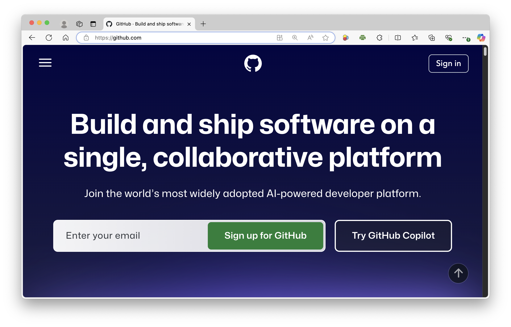
Telling git Who You Are
The git VCS keeps track of who makes changes to any files in a watched repository. We thus need to tell git (on your local computer) who you are so that when you make changes to a repository, either locally or remotely, they are associated with a particular user name and email. To do this within RStudio, select Tools > Terminal > New Terminal (which opens a new terminal window in the bottom left pane of the IDE) or Tools > Shell…, which will open up an external terminal window. Then type in the following replacing
git config --global user.name <your name>
git config --global user.email <your email address>
Alternatively, you can enter these commands directly in a terminal window that you open yourself, rather than one opened from within RStudio (e.g., by opening Applications/Utilities/Terminal.app on MacOS).
NOTE: Under this setup, git is now set to link any commits to the username associated with the email address used to tag your commits, even if you enter a different user name in the
--globaloptions here. If you use an email address that is not already associated with a GitHub account, then the username entered here in the local config will appear associated with your commits.
The command…
git config --global --list
… can be used to check if you set things up correctly.
Alternatively, you can set things up from within R, rather than using a shell window, as follows:
# uncomment the following line, if needed, to install the {usethis} package
# install.packages('usethis')
library(usethis)
use_git_config(user.name = "your name", user.email = "your email address")
detach(package:usethis)NOTE: See also Chapter 7 of the web book Happy Git and GitHub for the useR
Authenticating Your GitHub Account
Before you can access certain resources and functionality on GitHub, you will need to “authenticate” your access to GitHub from each local machine that you might work on. Basically, this process involves providing or confirming your access credentials that prove you are who you say you are when accessing GitHub. Access credentials can include a user name and password (often coupled with 2-factor authentication), a “personal access token”, and/or an SSH key. Depending on whether we are connecting to GitHub via HTTPS (“hypertext transfer protocol secure”) or SSH (“secure shell”), we will need to use different methods of authentication (see further details below).
To connect to GitHub via HTTPS (which is the way I typically recommend), we will need to authenticate using a “personal access token”, or PAT. When we then try to connect to GitHub from git and are prompted for a password, we would enter this personal access token (PAT) instead. (Password-based authentication for connecting to GitHub was removed a few years back, and using a PAT is more secure.)
To create a personal access token, follow the steps below:
Step 1:
Make sure your email address is verified in GitHub. You probably will have done this already if you have set up a GitHub account.
- In the upper-right corner of any page on GitHub, click your profile photo, then click “Settings”.
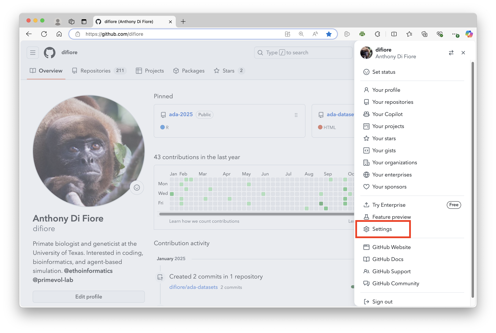
In the left sidebar, click “Emails”.
Under your email address, click “Resend verification email”.
GitHub will then send you an email with a link in it. After clicking that link, you will be taken to your GitHub dashboard and see a confirmation banner.
Step 2:
Generate a new PAT.
- In the upper-right corner of any page on GitHub, click your profile photo, then click “Settings”
- In the left sidebar, click “Developer settings”
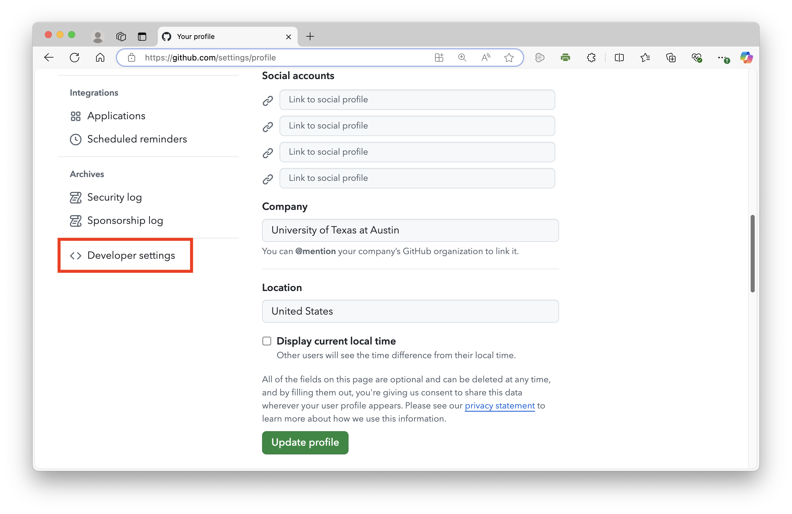
- In the left sidebar, click “Personal access tokens”.

- Click “Generate new token”.
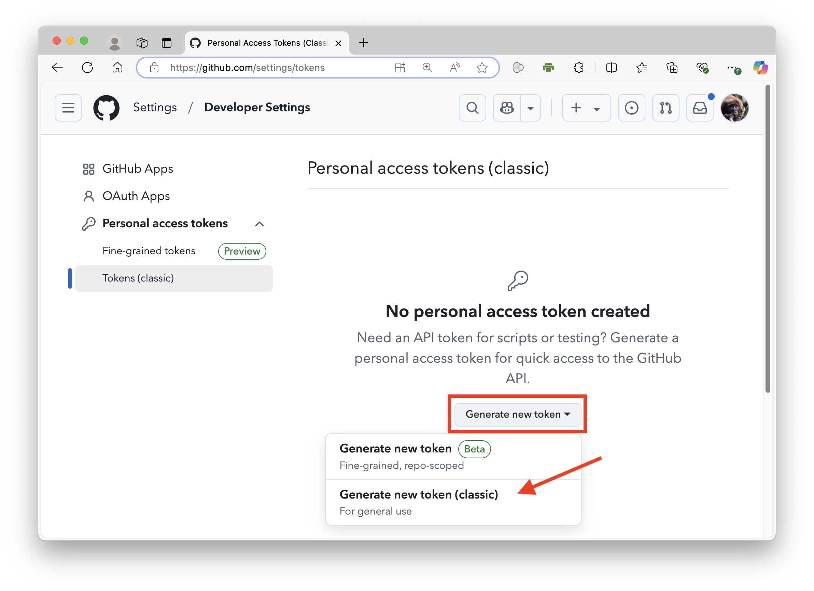
Give your token a descriptive name in the “Note” field.
Set an expiration date for the token.
Select extent of permissions you would like to grant this token. To use your token to access repositories from the command line, select the “repo” checkbox.

- Scroll to the bottom of the page and click the green “Generate token” button.
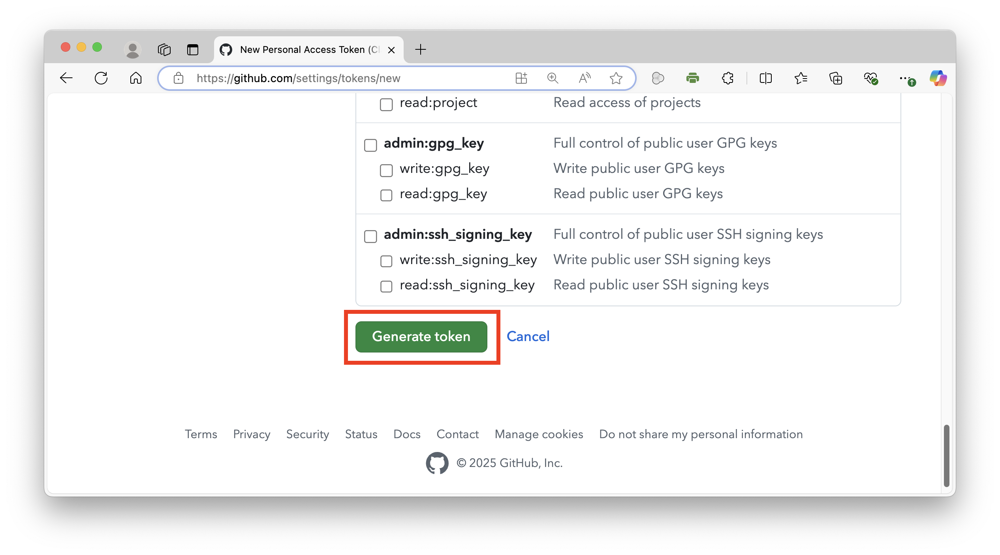
Once you have a token, you enter it instead of your password when performing git operations over HTTPS. Personal access tokens can only be used for HTTPS git operations. If you instead want to use SSH, you will have to set that up using an RSA key (see details below for how to do this within RStudio).
Caching Your GitHub Credentials
If you are not prompted for your username and password, your GitHub credentials may already be cached on your computer. If needed, you can update your credentials in your computer’s keychain to replace your old password with the token.
If you are running MacOS, there are several ways you can explicitly cache your credentials if you find that you are asked repeatedly for them when trying to connect to GitHub. Both require that the Homebrew package manager is installed. Visit https://brew.sh/ for instructions on installing Homebrew.
Using the GitHub CLI (Command Line Interface)
The GitHub CLI will automatically store your git credentials for you when you choose HTTPS as your preferred protocol for git operations and answer “yes” to the prompt asking if you would like to authenticate to git with your GitHub credentials.
- Install the GitHub CLI by running
brew install ghat a command prompt in a terminal window. - In the command line, enter
gh auth login, then follow the prompts. - When prompted for your preferred protocol for git operations, select HTTPS
- When asked if you would like to authenticate to git with your GitHub credentials, enter “Y”
Using the git Credential Manager (GCM)
git Credential Manager (GCM) is another way to store your credentials securely and connect to GitHub over HTTPS. With GCM, you do not have to manually create and store a personal access token, as GCM manages authentication on your behalf, including 2FA (two-factor authentication).
- Install GCM by running the following at a command prompt:
$ brew tap microsoft/git
$ brew install --cask git-credential-manager-coreThe next time you clone an HTTPS URL that requires authentication, e.g., for a private repository, git will prompt you to log in using a browser window. You may be asked to authorize an “OAuth app”. If your account or organization requires two-factor authorization, you will also need to complete the 2FA challenge.
Once you’ve authenticated successfully, your credentials will be stored in the macOS keychain and will be used every time you clone an HTTPS URL. git will not require you to type your credentials in the command line again unless you change your credentials.
If you are running Windows, GCM is included with the installer for Git for Windows. During installation you will be asked to select a credential helper, with GCM being set as the default.
The information above was pulled from the authentication and account security sections of GitHub’s documentation. See those links for more details and recommendations for troubleshooting any problems.
Creating a Remote Repository
Now, we will begin demonstrating how a VCS works by first setting up and working with a remote repository (colloquially, a “repo”) hosted on GitHub. You can do this either by following the instructions laid out in the “Hello World” GitHub guide or as below:
- Sign in to GitHub in a web browser, navigate to the “Repositories” tab on your user dashboard, and press the green “NEW” button.

- Enter a name for your repository (e.g., “test-repo”). By default, the repository will be designated as a “public” one. You can create “private” repositories, too, but this typically requires paying a hosting fee.
NOTE: Do not include spaces in your repository name!
- It is also a good idea to click the “Add a README file” checkbox under “Initialize this repository with:” so that your repository includes at least one file in it. A README file serves as a nice, introductory landing page for your repo. By creating at least one file in your repo, you will also set a default branch, named “main”, for
- When you are done, click the large green “Create repository” button.
NOTE: It is also good to click the checkbox for “Add .gitignore” and select “.gitignore template R”. This will create a hidden file in which you can specify files within your repo that you DO NOT want or need to keep under version control.
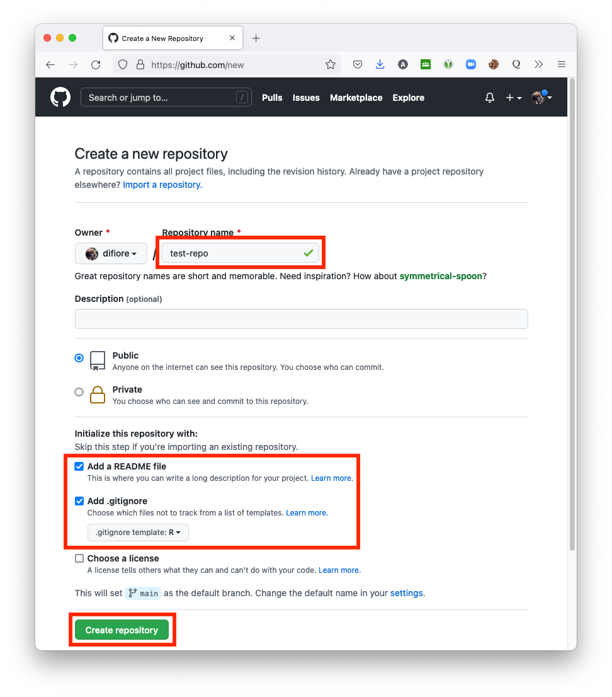
Congratulations! You’ve just set up your first GitHub hosted repository!
Changes and Commits
- As a first step to working with version control, let’s make some edits to the remote “README” file in your repository using the browser-based Markdown editor included in GitHub. Clicking the pencil icon at the top right of the “README” file will bring up the editor…
- You can then type in edits, using Markdown styling.

NOTE: Markdown is essentially a set of rules for how to easily style plain text files in such a way that can be easily converted and rendered in HTML, the structural language of the web. This module, and this entire website, for example, were written in RStudio using a particular version of Markdown called “Quarto Markdown”. GitHub has a nice, short tutorial that you can follow about “Mastering Markdown”. There is also a nice GitHub guide on “Documenting your Projects on GitHub” that provides a useful overview of the benefits of good documentation.
- When you are done editing, commit the changes to your remote “README” file by scrolling to the bottom of the editor window and clicking the “Commit Changes” button. Note that every commit you make to a repository must have some sort of brief, descriptive message associated with it. Here, GitHub has populated the message field with default text (“Update README.md”), but you can change this and, optionally, add a fuller message as well.
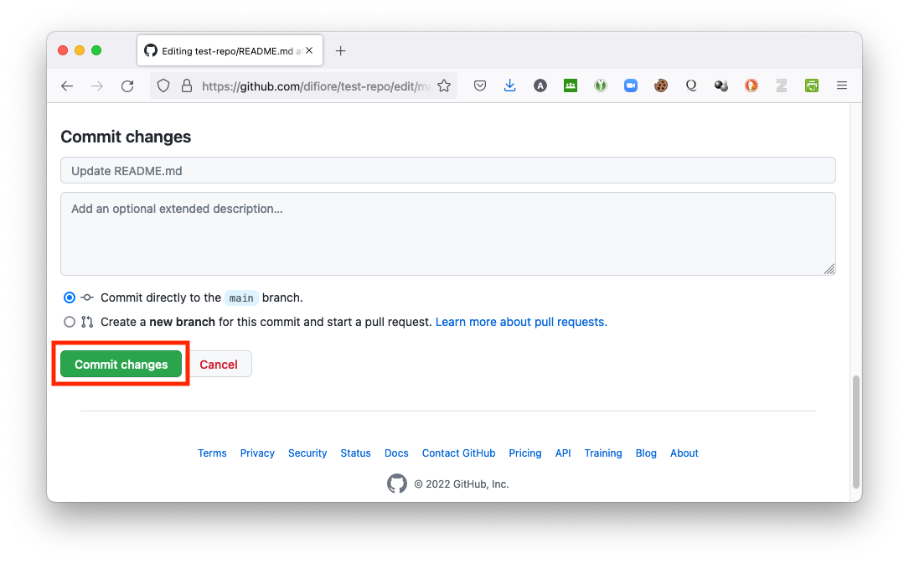
Working with Branches
So far, all of the changes you have made have been to the main branch of your repository, but one of the powerful features of git is that you can create different versions or branches of your repository to try out new things and then merge these back into the main branch. This feature - along with automated checking for merge conflicts created when different modifications have been made on two different branches - is what makes git and other VCSs so valuable for software development.
Here, we are going to create a new branch of our repository, edit a file in that new branch, and then merge the changes back into the main branch.
- Create a new branch of your repository (e.g., “readme-edits”) by opening the “branch” popdown menu, typing a new branch name, and then clicking on the “Create branch:” text. This will switch you over to the new branch.

- Using the same procedure as above, make some edits to the “README” file on your new branch and then commit those changes. E.g., add a new section to your Markdown file…
To merge changes from the new branch back into the main branch, we now need to [1] compare changes between branches, [2] create what is called a “pull request”, and [3] pull changes from the new branch back into the main branch. Along the way, if there are any differences between the two branches that cannot be merged without “conflicts” (e.g., cases where the same section of a particular file has been modified in both branches), then these will be highlighted and a merge prevented until the conflict is resolved.
Step 1
- Return to the
mainbranch by selecting the link for the repo and then confirm that you are on themainbranch by selecting it from the branches popdown menu. - Then select “Compare & pull request” to initiate a new pull request.

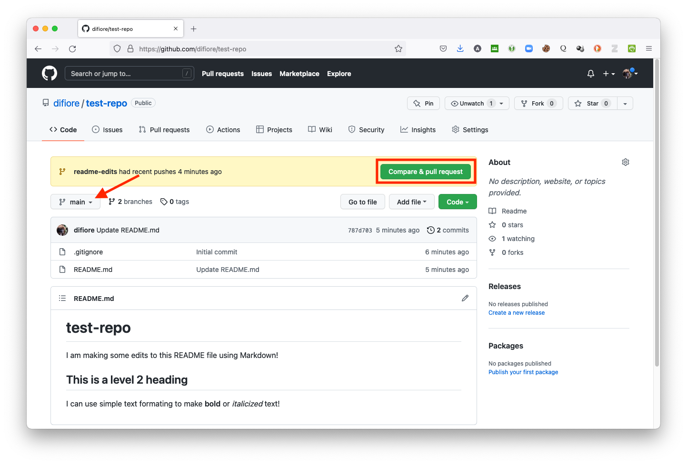
Step 2
- Select the branches to compare. Choose
mainas the “base” branch (the branch we are comparing to and merging into) andreadme-editsas the “compare” or “head” branch (the branch we are currently working in, where our most recent changes have been made).
NOTE: You should notice that when we shifted over to the
readme-editsbranch, GitHub switched the “head” branch frommaintoreadme-edits.
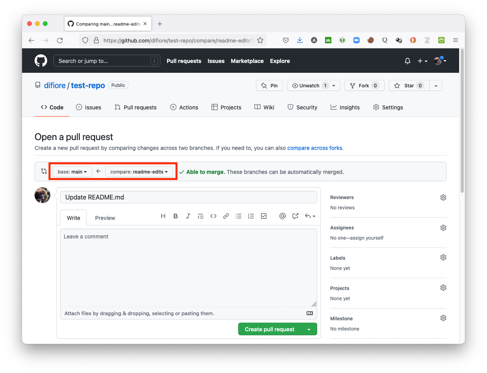
After making these selections, scroll to the bottom of the window… there you should see you a diffs (for “differences”) section that summarizes the differences between the main (base) and compare (head) versions.

Step 3
- Initialize the pull request by scrolling back up and pressing the green “Create pull request” button.

Step 4
- Set up and then confirm the merge by pressing the green “Merge pull request” and then “Confirm merge” buttons.


Step 5
- Once the merge has been completed, you can delete the new branch.
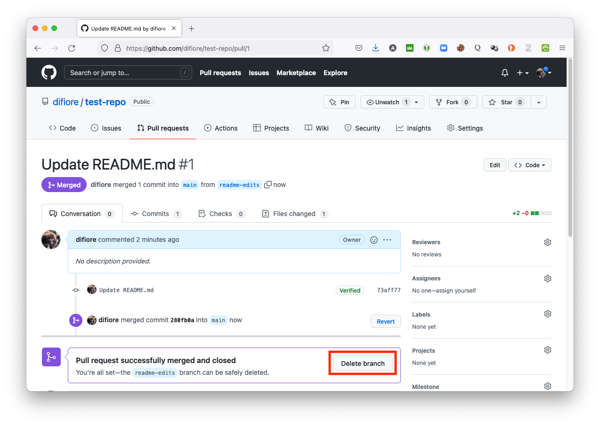
NOTE: The “Hello World” GitHub guide also covers basics of working with branches and merging.
5.5 Connecting git and GitHub
Now that we some familiarity with working with a remotely hosted repository, our next step in developing a git/GitHub workflow is to make a clone of that repository on one or more local computer(s). We can then work on and commit changes locally via git and then, when we are ready, we can “push” those changes up to the remotely hosted repository on GitHub.
Similarly, once a local repository under version control has been created and connected to a remotely hosted version, we can also make changes remotely and then “pull” those changes down to our local repository to keep them in sync.
It is very easy to do this process through the RStudio IDE, as we will see below, but we are going to first do it through the command line to show you all of the steps that RStudio facilitates.
Cloning a Remote Repository
There are two ways to connect between remote and local git repositories, via either HTTPS (which stands for “hypertext transfer protocol”) or SSH (which stands for “secure shell”). Our first steps will use the first of these approaches and will create a local “cloned” copy of a remote repository we have hosted on GitHub.
- Open a terminal shell. You can either do this directly from your operating system or you can access a shell from within RStudio by choosing Tools > Terminal > New Terminal or Tools > Shell…. Again, the former command opens a new terminal within the RStudio IDE, while the latter opens an external terminal window.
- Using the UNIX and DOS shell command
cd(for “change directories”), navigate into the folder that you want your cloned repository to be created in. I typically create new repos in a dedicated folder calledRepos/that I use for development work, which I keep in my main user folder on MacOS (e.g., “~/Development/Repos”). - Now open a web browser, go to the landing page for your repository on GitHub.com, click the green button that says “Code”, then select the “HTTPS” tab and copy the web URL that shows up in the text box by clicking on the tiny clipboard icon.

The web URL should include your GitHub username and the name of your the repository you are cloning and look something like…
https://github.com/<your user name>/<your repository name>.git
e.g., https://github.com/difiore/test-repo.git
- Return to the terminal window in RStudio or to the external shell prompt and type:
git clonefollowed by the copied URL, e.g.,git clone https://github.com/difiore/test-repo.git
NOTE: Here, you may be asked for your GitHub username and password… if so, enter you “personal access token” instead of the password.
The output should look something like:
[13:55:41] ~/Development/Repos$ git clone https://github.com/difiore/test-repo.git
Cloning into 'test-repo'...
remote: Enumerating objects: 11, done.
remote: Counting objects: 100% (11/11), done.
remote: Compressing objects: 100% (10/10), done.
remote: Total 11 (delta 1), reused 0 (delta 0), pack-reused 0
Receiving objects: 100% (11/11), done.
Resolving deltas: 100% (1/1), done.
[13:55:51] ~/Development/Repos$If you then navigate into the newly created local directory using the cd command, you can list and look at the cloned files. To do so, at the shell prompt type…
cd test-repo(to change into the correct directory)ls -a(to list all the files in the directory)head README.md(shows the first few lines of the file “README.md”)git remote show origin(shows information about the remote repository, including the branch that “push” and “fetch” commands will be applied to and which branch is being tracked locally)
The output should look something like:
[14:00:18] ~/Development/Repos$ cd test-repo/
[14:00:29] ~/Development/Repos/test-repo$ ls -a
. .. .git .gitignore README.md
[14:00:35] ~/Development/Repos/test-repo$ head README.md
# test-repo
I am making some edits to this README file using Markdown!
## This is a level 2 heading
I can use simple text formating to make **bold** or *italicized* text!
## Added this new section on a branch
[14:02:02] ~/Development/Repos/test-repo$ git remote show origin
* remote origin
Fetch URL: https://github.com/difiore/test-repo.git
Push URL: https://github.com/difiore/test-repo.git
HEAD branch: main
Remote branches:
main tracked
readme-edits tracked
Local branch configured for 'git pull':
main merges with remote main
Local ref configured for 'git push':
main pushes to main (up to date)
[14:02:31] ~/Development/Repos/test-repo$Making and Pushing Local Changes
Now, edit one of the local files in your repo. You can do this by opening the “README.md” file in any text editor (e.g., use the shell command open README.md, make some changes, and save) or by using the shell commands echo and >> (which redirects output to a file instead of the command prompt) to add text to the end of the file (e.g., echo "Here is some new text I am adding from the shell to update the README file." >> README.md).
You can also do this by navigating to the “README.md” file through the normal Windows or MacOS file manager, opening it up, and editing it with any plain text text editor like Visual Studio Code or BBEdit.
If you now type git status at the shell prompt, you will see a message that the “README.md” file has been changed:
[14:14:42] ~/Development/Repos/test-repo$ git status
On branch main
Your branch is up to date with 'origin/main'.
Changes not staged for commit:
(use "git add <file>..." to update what will be committed)
(use "git restore <file>..." to discard changes in working directory)
modified: README.md
no changes added to commit (use "git add" and/or "git commit -a")
[14:14:45] ~/Development/Repos/test-repo$To propagate our changes back up to the remote repository, we now need to do three things: [1] First, we need to “stage” or “add” the files to a queue of local changes. [2] We then need to “commit” those changes to our local repository so that git acknowledges that changes have been made and approved. [3] Finally, we then need to “push” the committed changes up across the internet to the remote repository hosted on GitHub. These are done with the git commands add, commit, and push in the shell as follows:
[14:14:45] ~/Development/Repos/test-repo$ git add -A
[14:20:49] ~/Development/Repos/test-repo$ git commit -m "A commit from my local repo"
[main e724f84] A commit from my local repo
1 file changed, 1 insertion(+)
[14:21:09] ~/Development/Repos/test-repo$ git push
Enumerating objects: 5, done.
Counting objects: 100% (5/5), done.
Delta compression using up to 4 threads
Compressing objects: 100% (3/3), done.
Writing objects: 100% (3/3), 387 bytes | 387.00 KiB/s, done.
Total 3 (delta 1), reused 0 (delta 0), pack-reused 0
remote: Resolving deltas: 100% (1/1), completed with 1 local object.
To https://github.com/difiore/test-repo.git
280fb0a..e724f84 main -> main
[14:21:21] ~/Development/Repos/test-repo$NOTE: The
-Aargument following thegit addcommand means to stage all files in the repo that have changed since the last commit (in this case, we have only one, “README.md”). The-margument followinggit commitindicates the message we want to include with our commit. It is necessary to include SOME message with each commit, and it is good practice to include a short description of what the commit includes, e.g., “Updating README file”.
To confirm that your edits have in fact been pushed up successfully, return to the landing page for your repository on GitHub in your web browser and hit refresh… you should see that the “README.md” file has been updated with new text!

And if you click on the “commits” history on the right hand site of message block above the updated README file, you should see one with the message “A commit from my local repo”.

NOTE: See also Chapters 9 to 12 of the web book, Happy Git and GitHub for the useR
Pulling Changes from GitHub
Similarly, we can make edits to files in a remote repository on GitHub using the service’s web-based Markdown editor and then then “pull” those down to our local repository.
- In your web browser, navigate to the page for your repository (e.g., “test-repo”) and again click on the pencil icon at the top right of the “README” file in a remote repository to bring up the editor.

Add some new text to the file and then scroll to the bottom of the page and “commit” your changes - remember that you need to enter a commit message in the text box (or accept the default “Update README.md” that is auto-filled).
Return to the shell prompt inside the local directory for your repository and enter the command
git pull. You should see something like the following, indicating that themainbranch of the local repository has been “fast-forwarded” to the state of the remotemainbranch that is being tracked:
[14:30:05] ~/Development/Repos/test-repo$ git pull
remote: Enumerating objects: 5, done.
remote: Counting objects: 100% (5/5), done.
remote: Compressing objects: 100% (3/3), done.
remote: Total 3 (delta 1), reused 0 (delta 0), pack-reused 0
Unpacking objects: 100% (3/3), 730 bytes | 182.00 KiB/s, done.
From https://github.com/difiore/test-repo
e724f84..8734542 main -> origin/main
Updating e724f84..8734542
Fast-forward
README.md | 2 ++
1 file changed, 2 insertions(+)
[14:30:10] ~/Development/Repos/test-repo$If you run the command git pull and the local repo is in sync with the version hosted on GitHub, you should see something like the following:
[14:30:25] ~/Development/Repos/test-repo$ git pull
Already up to date.
[14:30:26] ~/Development/Repos/test-repo$5.6 Additional Useful Information
Using the Shell
RStudio provides an interface to the most common version control operations including managing changelists, “diffing” files, committing, and viewing history. While these features cover basic everyday use of git, as we have seen above, we may also occasionally need to use the command line in either a system shell to access all of the underlying functionality of git.
RStudio includes functionality to make it very straightforward to use various system shells with projects under version control. This includes:
- You can use the Tools > Terminal > New Terminal and Tools > Shell… commands to open a new terminal within RStudio or a new system shell window with the working directory already initialized to your project’s root directory.
- When using git on Windows, these command by default should open the Git Bash shell, which is a port of the Unix bash shell to Windows that has been specially configured for use with a version of git called MSYS Git. Note that you can disable this behavior and use the standard Windows command prompt instead choosing using Tools > Global Options and selecting an alternative terminal in the Terminal section).
Using SSH instead of HTTPS
Remote repositories under version control can be accessed using a variety of internet file transfer protocols, including HTTPS (the protocol used above) and SSH (“secure shell”), a different file transfer protocol that does not require sending a user name and email address for authentication with every information transfer request. Typically, the authentication for an SSH connection is done using what are know as public/private RSA key pairs. This type of authentication requires two steps:
- Generating a public/private key pair
- Providing the public key to the hosting provider (e.g., GitHub or another service)
While Linux and Mac OSX both include SSH as part of the base system, Windows does not. As a result the standard Windows distribution of git (MSYS Git, referenced above) also includes an SSH client.
If you are interested in using SSH for connecting with GitHub, you can do the following within RStudio:
Step 1
- Create an
RSA Key
In the “Git/SVN” tab of the Tools > Global Options dialog box, press the button Create RSA key, which will create a new code that you will need for using SSH to send and receive data from remote servers as an alternative to the somewhat less secure HTTPS protocol we have already seen.
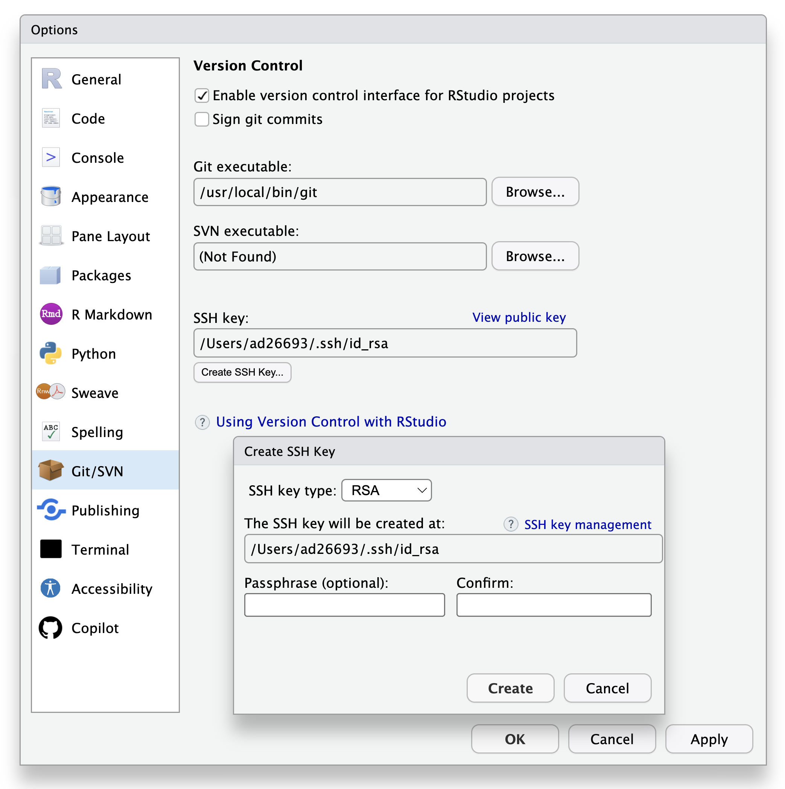
Step 2
- View and Copy the
RSA Key
From the “Git/SVN” tab of the Tools > Global Options dialog box, press the text link View public key, copy the displayed key, and close out of the dialog box.
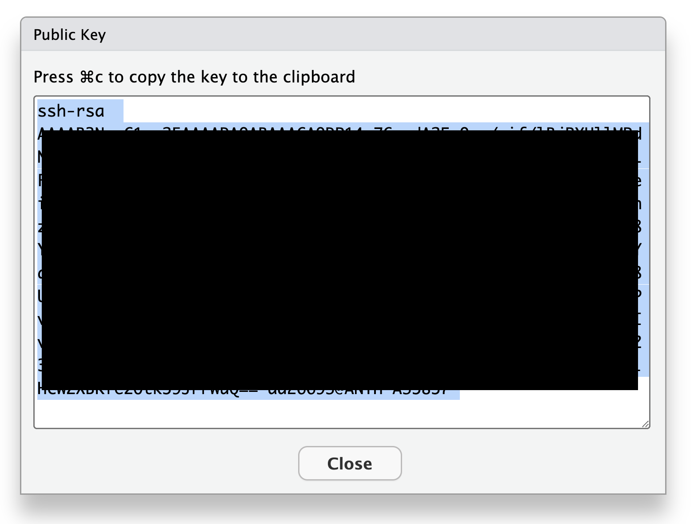
Step 3
- Set Up your GitHub Account for SSH
Go to your GitHub account online, open your profile/account settings, and then select the “SSH & GPG keys” tab.
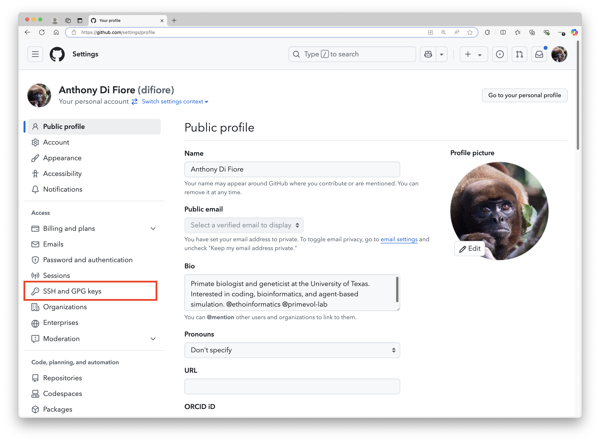
Click “New SSH key”, fill out a title for the new key (e.g., “Connect to GitHub from RStudio”), paste in the public key that you copied from RStudio (see above), and then click “Add SSH key” at the bottom of the window.
You should now be set up to use SSH in lieu of HTTPS URLs for cloning repositories and for pushing to/pulling from remote repositories on GitHub. These URLs take the form of git@github.com:<your user name>/<your repository name>.git
Step 4
- Clone the remote repository
The process is essentially the same as we used above for cloning via HTTPS.
- Open a web browser, go to your repository on GitHub.com, click the green button that says “Clone or download” (but now choose “Clone with SSH”), and copy the URL that shows up in the text box.

- Go to a shell prompt,
cdto the directory that you want the repository to be downloaded into, and type:git clonefollowed by the copied SSH URL, e.g.,git clone git@github.com:<your user name>/<your repository name>.git
The output should look something like:
[14:05:30] ~/Development/Repos$ git clone git@github.com:difiore/test-repo.git
Cloning into 'test-repo'...
The authenticity of host 'github.com (140.82.113.3)' can't be established.
ED25519 key fingerprint is SHA256:+DiY3wvvV6TuJJhbpZisF/zLDA0zPMSvHdkr4UvCOqU.
This key is not known by any other names
Are you sure you want to continue connecting (yes/no/[fingerprint])?Here, you can answer yes and hit <RETURN>.
Warning: Permanently added 'github.com' (ED25519) to the list of known hosts.
remote: Enumerating objects: 17, done.
remote: Counting objects: 100% (17/17), done.
remote: Compressing objects: 100% (15/15), done.
remote: Total 17 (delta 3), reused 3 (delta 1), pack-reused 0
Receiving objects: 100% (17/17), done.
Resolving deltas: 100% (3/3), done.Switching Transfer Protocols
We can check what protocol you are using to connect to a remote repository by cding into the repository and then typing git remote -v. You should then see something like:
[14:09:31] ~/Development/Repos$ git remote -v
origin git@github.com:difiore/test-repo.git (fetch)
origin git@github.com:difiore/test-repo.git (push)To change the protocol we use, we simply point git to the URL associated with the desired transfer protocol. The following commands switch us from using SSH to HTTPS, then back.
[14:12:10] ~/Development/Repos$ git remote set-url origin https://github.com/difiore/test-repo.git
[14:12:13] ~/Development/Repos$ git remote -v
origin https://github.com/difiore/test-repo.git (fetch)
origin https://github.com/difiore/test-repo.git (push)
[14:12:17] ~/Development/Repos$ git remote set-url origin git@github.com:difiore/test-repo.git
[14:12:31] ~/Development/Repos$ git remote -v
origin git@github.com:difiore/test-repo.git (fetch)
origin git@github.com:difiore/test-repo.git (push)Using git with Windows
Sometimes, getting git set up and working properly on Windows machines can be a bit tricky, but I have included information below that might be helpful if you experience difficulties. These notes and procedures were useful for me to install git on a Windows 10 PC and to connect it successfully with RStudio.
Some Notes
[1] When you install git and you are going through the installation dialog boxes, you can keep the defaults on all of them - just be sure to confirm that…
- In the box about “Adjusting your PATH environment” you check the radio button to say “Git from the command line and also from 3rd party software”

- In the box about “Configuring the terminal editor to use with Git Bash” you check the radio box that says “Use MinTTY (the default terminal of MSYS2)”
NOTE: As part of its installation on a Windows PC, git will also install another piece of software, Git Bash, which is basically on alternative “shell” program you can use to access your computer’s OS directly. It is analogous (but with somewhat different functionality) to the Windows COMMAND PROMPT and the Windows POWER SHELL.
[2] If you poke around the directory system on your Windows machine, you will find that when you install git it appears to put four, slightly different git.exe files on your computer. Here is a summary of what I think they are and how I think they function, based on searches on StackOverflow
File 1. C:\Program Files\Git\bin\git.exe
When you open RStudio after installing git and then go to Tools > Global Options and select the Git/SVN* section, you should see the path above appear in the text box for “Git executable”.
I am not entirely sure that this is the case, but I THINK this git.exe file simply links an executable file that is actually stored in a different place (see File 2. below), but this is where many programs will expect to find the git executable by default.
RStudio should find and fill in this path by itself, but if it does not, then click the “Browse” button next to the text box and browse to select this file: “C:Files.exe”
File 2. C:\Program Files\Git\cmd\git.exe
This is the executable file that is accessible via a PATH environmental variable that should get added to your Windows environment automatically when you installed the git software with the defaults noted above.
Thus, after installing git and restarting your computer, when you then choose Tools > Shell… or Tools > Terminal > New Terminal from RStudio and type which git in the shell that opens up, it should be THIS executable which is called and returned. That is, if you access the shell or terminal from RStudio and type which git you should get /cmd/git.

File 3. C:\Program Files\Git\mingw64\bin\git.exe
This version of the git executable is what opens if you directly open the Git Bash shell, rather than opening it from within RStudio.
After installing git, you can access Git Bash from the Windows start menu (i.e., the menu that pops up from clicking the Windows icon at the bottom left of your Windows desktop). If you select Git > Git Bash from the start menu, a shell window will open up, and if you then type which git there, it will return /mingw64/bin. Honestly, I have no idea why accessing the Git Bash shell this way rather than through RStudio runs a different instance of git!

File 4. C:\Program Files\Git\mingw64\libexec\git-core\git.exe
This is another version of the executable that is used by the Git Bash shell. I think it probably just points to the one listed in File 3.
The fact that multiple versions of slightly different git executables are installed in different places means that we need to be careful that the right one is used when we try to access git from RStudio. Below, I have tried to distill what we need to know to get things to work for Windows users.
Thus, with the above in mind, if you are having issues with your git installation for Windows, try the following…
Preliminaries
Confirm that your “HOME”” environmental variable is set to the root of your user folder. To do this, open the Environmental Variables Control Panel, look in the top panel (“User variables for USERNAME”) and confirm that there is a “HOME” variable and it has the path to your user folder. If not, create a new variable called “HOME” and enter the path or modify the path.
NOTE: When I set up my Windows machine, there was no “HOME” variable yet specified… I had to create one. Setting this is important because the
git config --globalcommands you will run below set up and then look for an invisible file,.gitconfig, at the root of your home folder.
Step 1
Download git for Windows from the git website.
Install it using the default settings in the installation dialog boxes. This should add C:\Program Files\Git\cmd to your Windows PATH (which contains a list of directories that is loaded into your Windows environment when you either start up Windows or log in, which tells Windows where to search for any installed executable software it is asked to run).
Step 2
Log out of Windows and log in again or completely restart Windows.
We need to log out and log in again or restart Windows to have the PATH environmental variable updated. This, I think, is one of the issues folks were having.
Step 3
Start up RStudio and check that the path to the git executable in Tools > Global Options > Git/SVN is set to C:\Program Files\Git\bin\git.exe I think it should be set automatically, but if not, click the “Browse” button next to the text box and find this path and then restart RStudio.

NOTE: The git icon and tab will likely NOT YET APPEAR in your RStudio IDE.
Step 4
In Tools > Global Options > Terminal, make sure that new terminals are set to open with Git Bash rather than some other shell. You can set this in the pop down menu “New terminals open with…” There seemed to be an issue that some folks had where new terminal windows were opening at the COMMAND PROMPT, which is not what we want but is easily corrected.

Step 5
Choose Tools > Shell… or Tools > Terminal > New Terminal” and confirm that you are opening in the Git Bash** shell. This should be the case if you have done step 4 above. The command prompt will read something like…
- In green:
YOUR.USERNAME@YOUR.COMPUTER NAME - In purple:
MSYS(the default name for the MinTTY Git Bash shell) - In orange: The name of the directory/repository you are currently in (i.e., your current working directory)
- The typical bash command prompt:
$
NOTE: If your current directory is under version control (e.g., if you are opening a shell for a project that you are already managing with git) then the name of the branch you are on will be listed in in blue parentheses.

Step 6
Confirm that git is available by typing which git. It should return /cmd/git
Step 7
Set your git identity as instructed above by typing the following at the command prompt:
git config --global user.name “your name”
git config --global user.email “your email address”
NOTE: Your name and email address do not need to be in quotes unless there is a space in one of them.
Step 8
Check your configuration by typing the following at the command prompt:
git config --list
You should get a list of settings that includes at least two settings, user.name and user.email, that match what you just entered.

Step 9
Return to RStudio and start a new project (File > New Project) from a “New Directory” (e.g., “test-repo”).
Check the box indicating that you want to “Create a git repository”, RStudio should close and reopen and the git icon and git tab should now appear in the IDE. Also, if you now open a project that is already under version control (e.g., that you clone from GitHub), then these should also appear.

Voíla!!! You should now be ready to go! Try creating a new file in your project and then committing it, as described above.
Concept Review
- Setting up git
- Setting up GitHub
- Working in the Terminal/Shell
- Cloning a remote repository
- git basics
- Staging and committing changes to a repository
- Pushing to and pulling from a remote repository